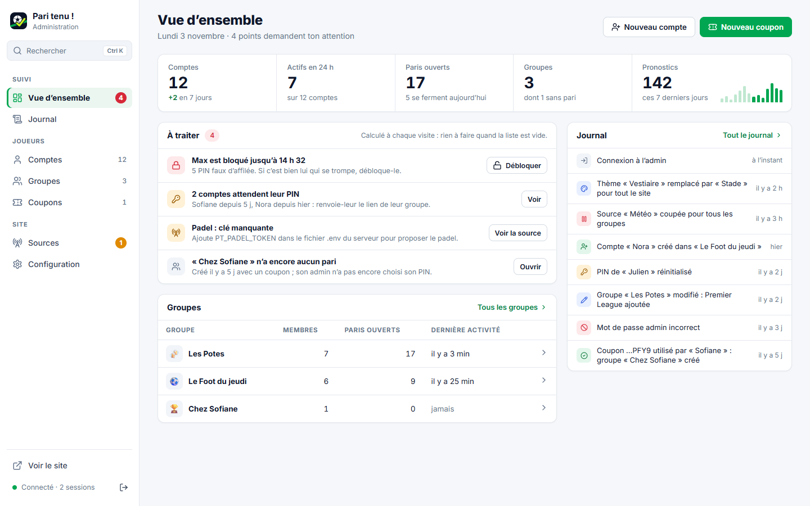
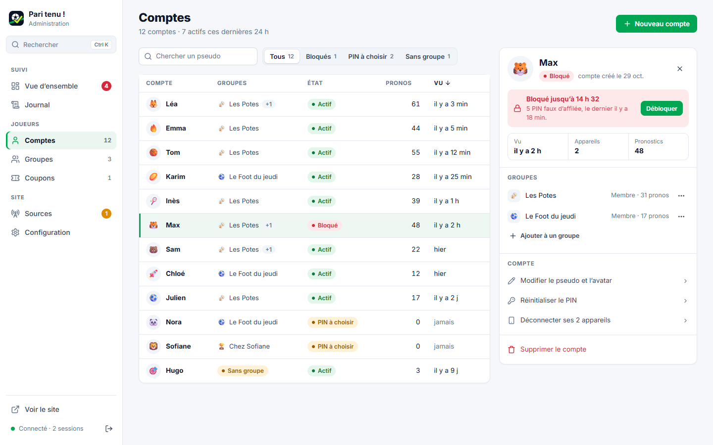
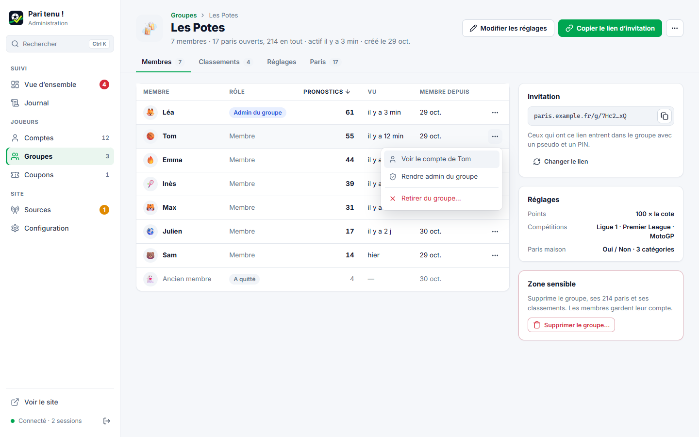
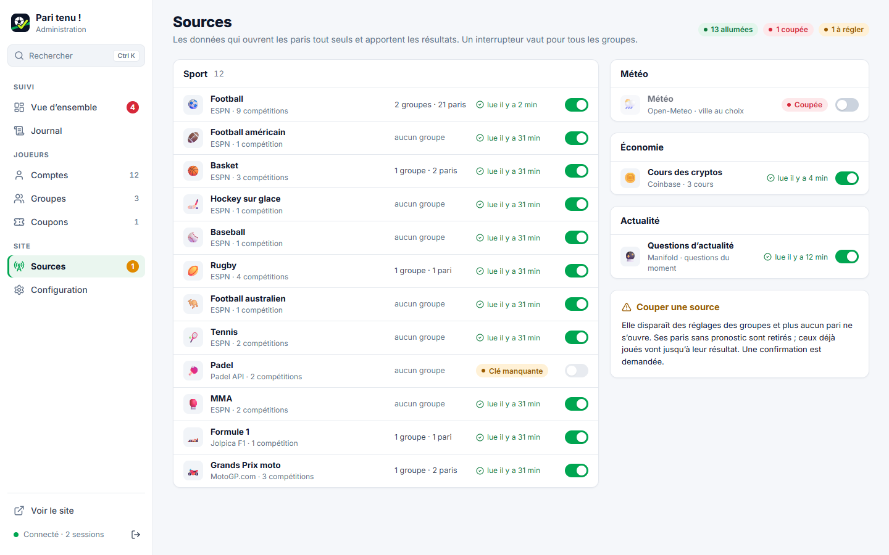
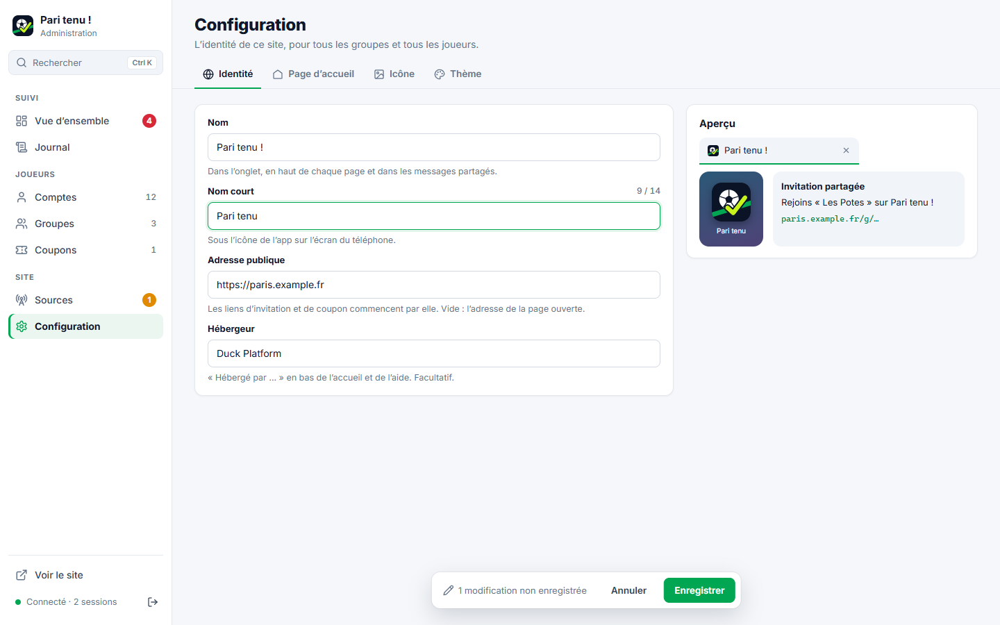
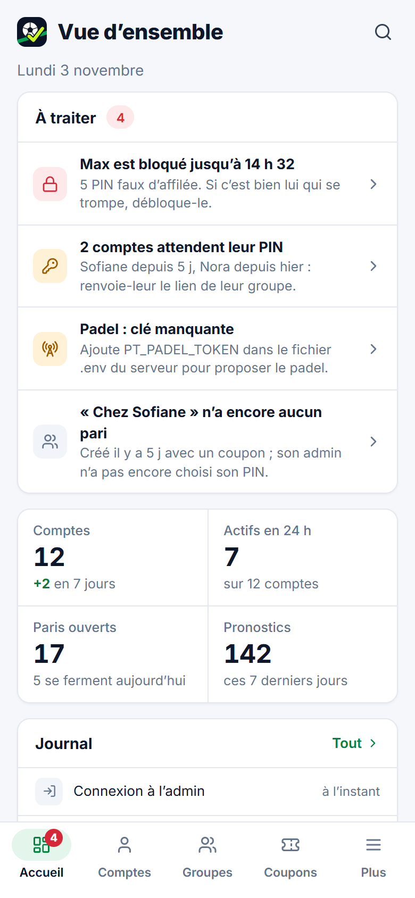
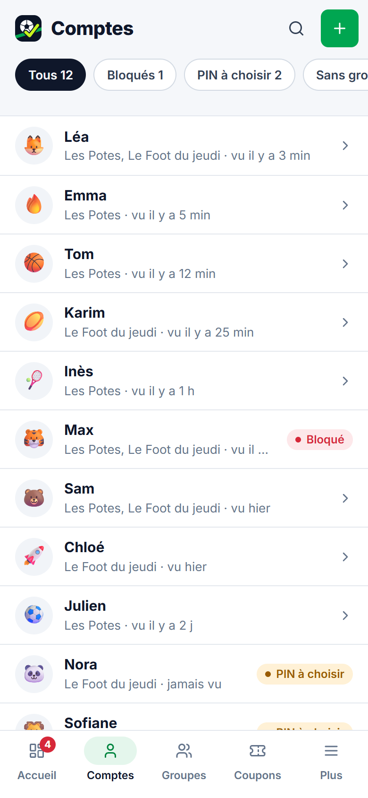
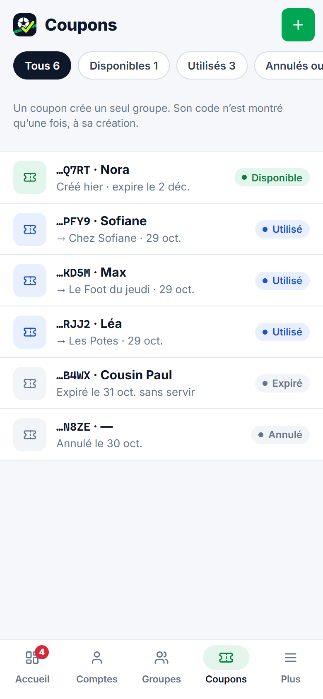
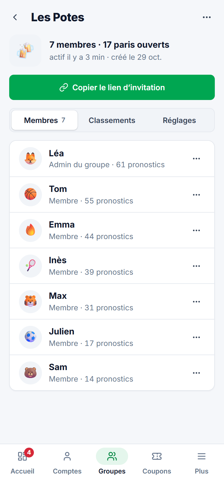

Clair et net, comme les outils pro. Style « Minimalism & Swiss » et police Inter, conseillés par le skill ui-ux-pro-max pour les tableaux de bord et les admins. Le vert de l’app pour les actions.

PC · Vue d’ensembleÀ traiter, chiffres, groupes, journal

PC · ComptesListe + fiche de Max ouverte à droite

PC · Un groupeOnglets, menu « ⋯ » d’un membre ouvert

PC · SourcesInterrupteurs rangés par type

PC · ConfigurationOnglets + aperçu en direct

Téléphone · Vue d’ensemble

Téléphone · Comptes

Téléphone · Coupons

Téléphone · Un groupe
Un menu à gauche rangé en trois blocs (Suivi, Joueurs, Site), avec des compteurs. Sur téléphone : une barre du bas à 5 entrées au lieu du bandeau qui défile et cache la moitié des pages.
« À traiter » d’abord : compte bloqué, PIN pas encore choisi, source sans clé, groupe sans pari. Chacun a son bouton. Liste vide = tout va bien.
Des chiffres qui disent quelque chose : +2 comptes en 7 jours, 5 paris se ferment aujourd’hui, les pronostics des 14 derniers jours.
Des listes denses : toute la ligne s’ouvre. Sur PC, la fiche s’ouvre à droite sans quitter la liste. Sur téléphone, une ligne par compte ou coupon (aujourd’hui : une carte de 6 lignes chacun).
Une seule action principale par page, le reste dans « ⋯ ». Supprimer est rangé à part, en bas (« Zone sensible »).
Sources : des interrupteurs rangés par type, au lieu de 14 boutons rouges « Couper ».
Configuration en onglets, avec l’aperçu à côté du formulaire.
Recherche partout (Ctrl K) : un compte, un groupe, un coupon.
Icônes au trait au lieu des emoji, titres droits (plus d’italique en majuscules). Les emoji restent pour les groupes et les avatars : ce sont ceux des joueurs.
Nouveau côté serveur « lue il y a 2 min » sur chaque source : l’heure de sa dernière lecture réussie, pour voir d’un coup d’œil si ESPN ou MotoGP ne répond plus.